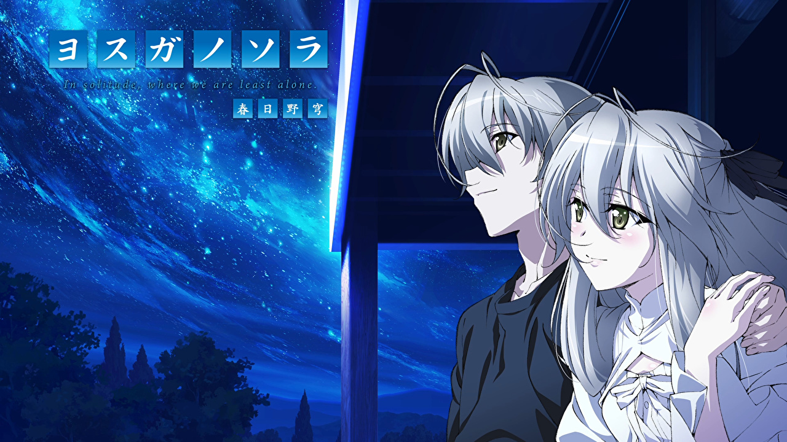
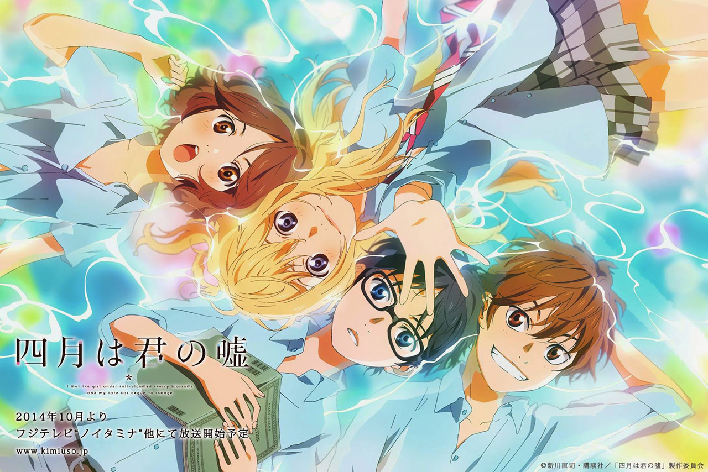
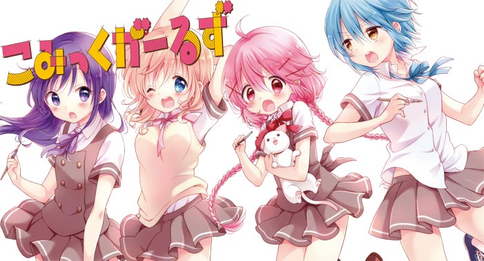
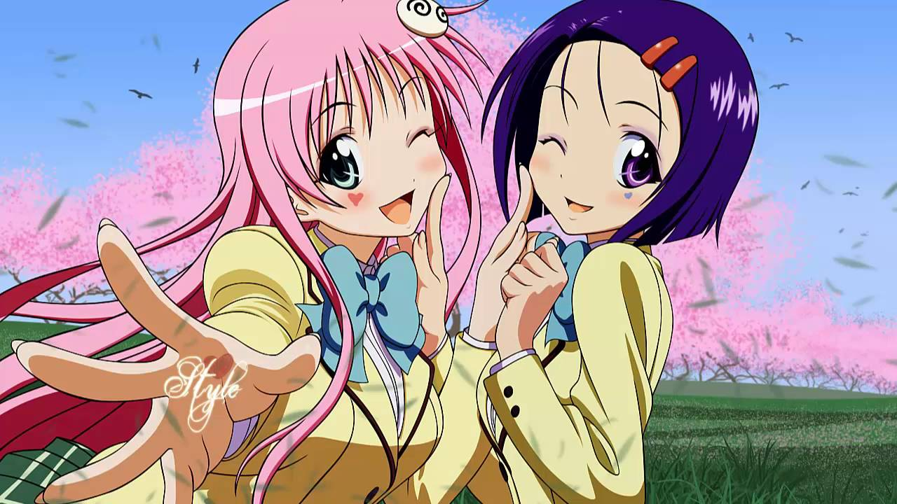
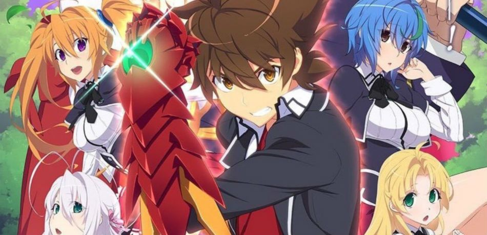
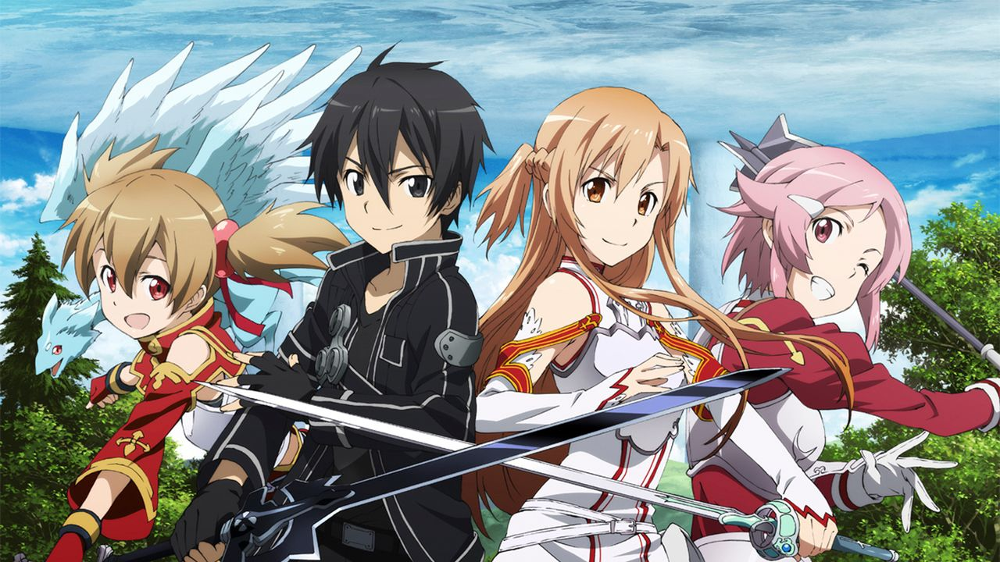
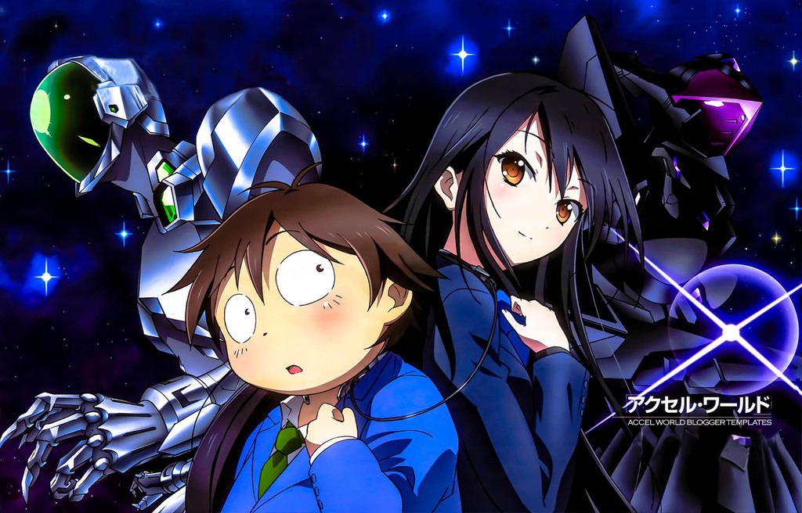

Yosuga no Sora
Yosuga no Sora is a Japanese romance/drama adult visual novel developed by CUFFS ("Sphere"). The game was originally released for Windows on December 5, 2008. It was adapted into a serialized manga and an anime television series. A sequel/fan disk titled Haruka na Sora was released later on October 24, 2009, which contains new and expanded scenarios for several characters from the original game.

Your lie in April
Your Lie in April, known in Japan as Shigatsu wa Kimi no Uso or just simply Kimiuso, is a Japanese manga series written and illustrated by Naoshi Arakawa. The series was serialized in Kodansha's Monthly Shōnen Magazine from April 2011 to May 2015. An anime television series adaptation by A-1 Pictures aired from October 2014 to March 2015 on Fuji TV's Noitamina block. A live-action film adaptation of the same name was released in September 2016.

Kaoruko Moeta, a yonkoma mangaka who goes by the pen name "Chaos", is a freshman in high school. After her manga ranks at the bottom of a reader survey, her comic editor recommends that she enter a special dormitory for manga artists. Kaoruko's roommates are shōjo manga creator Koyume Koizuka, teen romance manga creator Ruki Irokawa, and shōnen manga creator Tsubasa Katsuki. The girls support each other as they work to create the best manga series.
Comic Girls
Comic Girls is a Japanese four-panel manga series by Kaori Hanzawa. It made its first appearance in Houbunsha's seinen manga magazine Manga Time Kirara Max with the May 2014 issue. An anime television series adaptation by Nexus aired in Japan between April and June 2018.Kaoruko Moeta, a yonkoma mangaka who goes by the pen name "Chaos", is a freshman in high school. After her manga ranks at the bottom of a reader survey, her comic editor recommends that she enter a special dormitory for manga artists. Kaoruko's roommates are shōjo manga creator Koyume Koizuka, teen romance manga creator Ruki Irokawa, and shōnen manga creator Tsubasa Katsuki. The girls support each other as they work to create the best manga series.

JoJo's Bizarre Adventure
JoJo's Bizarre Adventure is a Japanese manga series written and illustrated by Hirohiko Araki. It was originally serialized in Weekly Shōnen Jump from 1987 to 2004 before being transferred to the monthly seinen magazine Ultra Jump in 2005. The current story arc, JoJolion, started in 2011. JoJo's Bizarre Adventure is currently Shueisha's second largest manga series with its chapters collected into 124 tankōbon volumes and counting. A six-volume original video animation adaptation of the latter half of the series' third story arc was released from 1993 to 1994 by studio A.P.P.P., followed by another seven-volume series covering earlier parts of the arc from 2000 to 2002. A.P.P.P. also produced a theatrical film of the first arc in 2007. In 2012, an anime television series produced by David Production began broadcast on Tokyo MX and covered the first two-story arcs of the manga in 26 episodes. A second 48-episode season covering the third arc was broadcast in 2014 and 2015, a 39-episode season adapting the fourth aired between April and December 2016, and a new season adapting the fifth premiered in October 2018. The JoJo's Bizarre Adventure manga has over 100 million copies in print, making it one of the best-selling manga series in history, and has spawned a large media franchise that includes several novelizations and video games, action figures, a jewelry line, and even snack foods. From 2003 to 2005, Super Techno Arts released both OVA series in North America. Viz Media released a translation of the third part of JoJo's Bizarre Adventure in North America from 2005 to 2010, but began publishing the series from the beginning in 2015.

To Love Ru
To Love-Ru is a Japanese manga series written by Saki Hasemi and illustrated by Kentaro Yabuki, creator of Black Cat. The manga was serialized in Shueisha's Weekly Shōnen Jump magazine from April 24, 2006 to August 31, 2009, and the chapters collected into 18 tankōbon volumes. The manga series' title, Toraburu (とらぶる), is the English gairaigo (loan word) "trouble" and "rabu" (ラブ) is the English loan word "love". The title is a pun on the words "love" and "trouble", which describes the harem aspect of the series.

High School DxD
High School DxD is a Japanese light novel series written by Ichiei Ishibumi and illustrated by Miyama-Zero. The story centers on Issei Hyodo, a perverted high school student from Kuoh Academy desires to be a harem king who is killed by his first date, revealed to be a fallen angel, but is later revived as a devil by Rias Gremory to serve her and her devil family. Issei's deepening relationship with Rias proves dangerous to the angels, the fallen angels, and the devils.


Sword Art Online
Sword Art Online is a Japanese light novel series written by Reki Kawahara and illustrated by abec. The series takes place in the near future and focuses on protagonist Kazuto "Kirito" Kirigaya and Asuna Yuuki as they play through various virtual reality MMORPG worlds. Kawahara originally wrote the series as a web novel on his website from 2002 to 2008. The light novels began publication on ASCII Media Works' Dengeki Bunko imprint from April 10, 2009, with a spin-off series launching in October 2012. The series has spawned eight manga adaptations published by ASCII Media Works and Kadokawa. The novels and four of the manga adaptations have been licensed for release in North America by Yen Press. An anime television series produced by A-1 Pictures, known simply as Sword Art Online, aired in Japan between July and December 2012, with a television film Sword Art Online: Extra Edition airing on December 31, 2013, and a second season, titled Sword Art Online II, airing between July and December 2014. An animated film titled Sword Art Online The Movie: Ordinal Scale featuring an original story by Kawahara premiered in Japan and Southeast Asia on February 18, 2017, and was released in the United States on March 9, 2017. A spin-off anime series titled Sword Art Online Alternative Gun Gale Online premiered in April 2018, while a third season titled Sword Art Online: Alicization premiered in October 2018. A live-action series will be produced by Netflix. Six video games based on the series have been released for multiple consoles.
